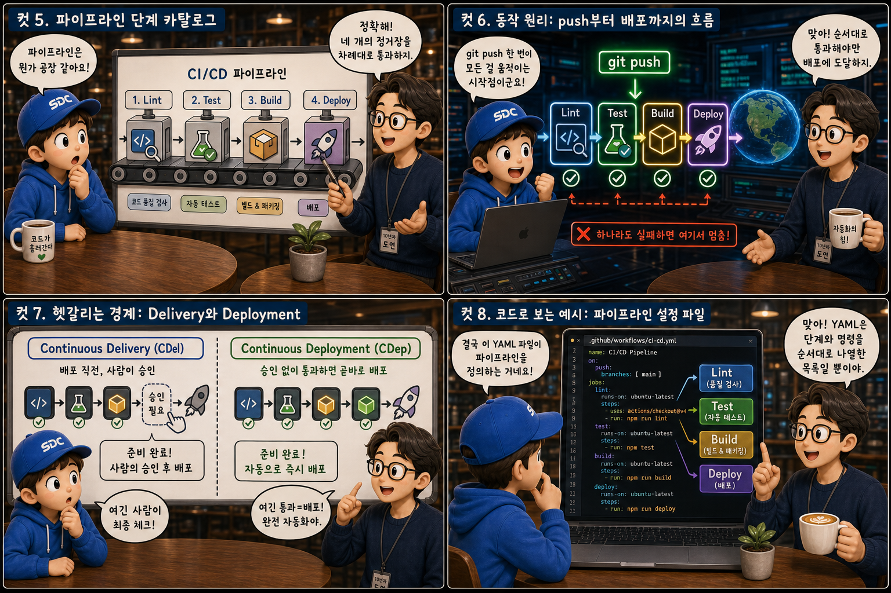
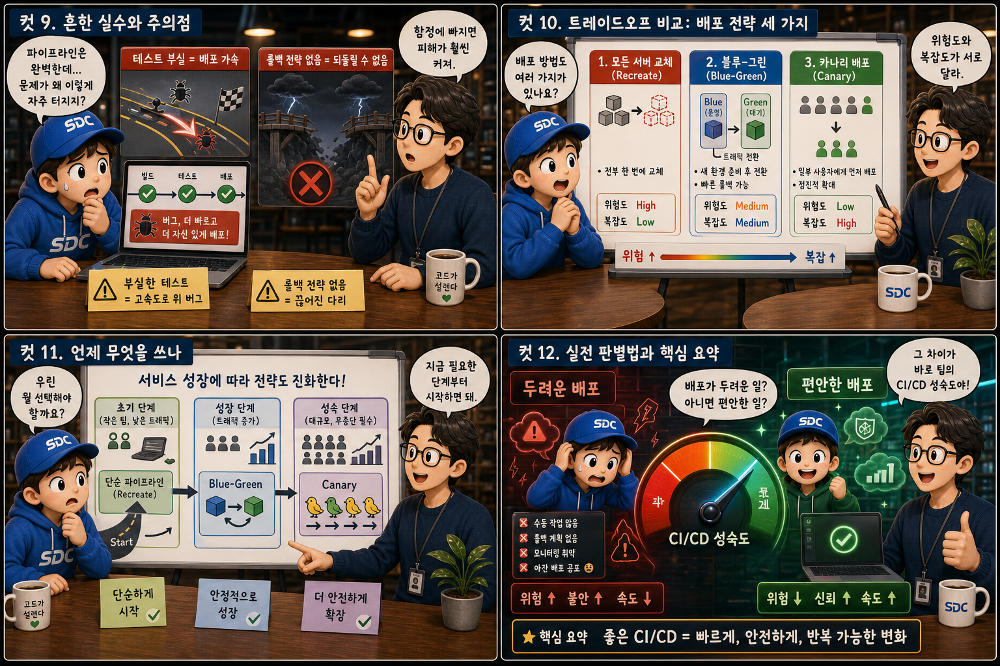

공장의 ‘컨베이어 벨트’에 비유해, 커밋 한 번이 자동으로 검증되고 배포까지 이어지는 여정을 12컷으로 풀어봅니다.
CI→CD
코드를 커밋하는 순간과 사용자가 새 기능을 만나는 순간 사이에는, 눈에 보이지 않는 자동화된 컨베이어 벨트가 놓여 있습니다. 사람이 매번 손으로 확인하고 옮기는 대신, 정해진 규칙에 따라 자동으로 검수하고 내보내는 이 흐름을 우리는 CI(지속적 통합)와 CD(지속적 전달/배포)라고 부릅니다. 이 글에서는 git push 한 번이 어떻게 빌드와 테스트를 거쳐 실제 서비스로 굴러 나가는지, 벨트 왼쪽 끝의 커밋 상자부터 오른쪽 끝의 로켓 발사까지 하나씩 따라가 봅니다.
PART 1 / 3 — 벨트의 두 구간과 원칙 (컷 01–04)
fourcut-01 — 컷 01 ~ 04
컷 01
컨베이어 벨트의 양 끝
코드를 커밋하는 순간과 사용자가 새 기능을 만나는 순간 사이에는, 눈에 보이지 않는 자동화된 컨베이어 벨트가 놓여 있다.
벨트 왼쪽 끝에는 git commit이라는 각인이 새겨진 작은 상자가 올라오고, 벨트 오른쪽 끝에서는 흰 연기를 내뿜으며 로켓이 발사됩니다. 그 사이 구간은 절반으로 나뉘어 있는데, 앞쪽은 시안색 조명 아래 CI 구간이고 뒤쪽은 로즈색 조명 아래 CD 구간입니다. 커밋 한 번이 어떻게 배포까지 이어질까요. 그 사이에는 사람이 매번 손으로 확인하는 대신, 정해진 규칙에 따라 자동으로 검수하고 내보내는 파이프라인이 있습니다. 이 흐름을 우리는 CI/CD라고 부릅니다.
컷 02
정의부터 명확히: CI와 CD는 각각 무엇인가
CI(지속적 통합)는 커밋마다 자동으로 빌드하고 테스트하는 과정이고, CD(지속적 전달/배포)는 검증된 코드를 자동으로 세상에 내보내는 과정이다.
CI(Continuous Integration, 지속적 통합)는 개발자가 코드를 저장소에 올릴 때마다 자동으로 빌드하고 테스트를 돌려서, 새 코드가 기존 코드와 잘 통합되는지 확인하는 과정입니다. CD(Continuous Delivery 또는 Continuous Deployment, 지속적 전달 또는 배포)는 그렇게 검증된 코드를 실제 서비스 환경으로 자동으로 내보내는 과정을 말합니다. 벨트 중앙의 표지판을 기준으로 왼쪽 구간에는 톱니바퀴와 체크리스트 아이콘이, 오른쪽 구간에는 포장되어 트럭에 실리는 상자 아이콘이 지나갑니다. 경계는 점선으로 표시되어 있을 뿐, 두 과정은 결국 하나의 벨트로 이어져 있습니다.
컷 03
나란히 비교: 손으로 나르기 vs 벨트 위에 올리기
수동 배포는 사람이 직접 파일을 서버로 옮기는 위태로운 작업이고, 자동화된 파이프라인은 정해진 규칙대로 스스로 굴러가는 벨트다.
수동 배포는 담당자가 직접 서버에 접속해 파일을 올리고 명령어를 실행하는 방식으로, 사람의 실수가 개입할 여지가 크고 매번 똑같이 재현하기도 어렵습니다. 상자를 양손에 들고 사다리를 오르다 기울어져 떨어질 듯한 수동 FTP 업로드가 이 모습을 보여줍니다. 반면 자동화된 파이프라인은 같은 절차를 코드로 정의해 두고, 버튼 한 번 또는 커밋 한 번으로 항상 동일한 방식으로 실행합니다. 속도보다 더 중요한 차이는 일관성과 재현 가능성입니다. 두 장면 모두 같은 로켓 발사대로 향하지만, 과정이 다르면 위험도 다릅니다.
컷 04
핵심 원칙 인용카드
작은 변경을 자주 통합하고 자주 검증하면 문제를 훨씬 일찍, 훨씬 싸게 발견할 수 있다.
INTEGRATE
작게, 자주 통합하고
VALIDATE
일찍, 자동으로 검증하라
core principle
CI/CD의 근본 원칙은 단순합니다. 변경 사항을 크게 쌓아두었다가 한꺼번에 통합하면 충돌과 버그를 찾기가 어렵지만, 작은 단위로 자주 통합하고 그때그때 자동으로 검증하면 문제를 훨씬 이른 시점에, 훨씬 적은 비용으로 발견할 수 있습니다. 이것이 컨베이어 벨트가 코드를 조금씩 쉬지 않고 흘려보내는 이유입니다.
PART 2 / 3 — 단계와 동작 원리 (컷 05–08)

fourcut-02 — 컷 05 ~ 08
컷 05
파이프라인 단계 카탈로그
파이프라인은 Lint, Test, Build, Deploy라는 네 개의 정거장을 순서대로 통과하는 컨베이어 구간으로 이루어진다.
전형적인 파이프라인은 네 단계로 나뉩니다. Lint는 코드 스타일과 기본 문법 오류를 검사하고, Test는 자동화된 테스트를 실행해 기능이 의도대로 동작하는지 확인하며, Build는 실행 가능한 산출물로 코드를 조립하고, Deploy는 그 산출물을 실제 서버나 클라우드 환경에 올립니다. 벨트 위에 세워진 네 개의 아치형 게이트마다 신호등이 있어 통과하면 초록, 실패하면 빨강으로 켜집니다. 각 단계는 앞 단계를 통과해야만 다음으로 넘어갈 수 있습니다.
컷 06
동작 원리: push부터 배포까지의 흐름
개발자의 git push 한 번이 파이프라인을 자동으로 깨우고, 각 단계를 순서대로 통과해야만 배포에 다다르며 하나라도 실패하면 그 자리에서 멈춘다.
git push→Lint→Test→Build→Deploy→배포 완료
개발자가 git push로 코드를 저장소에 올리면, 그 이벤트가 파이프라인을 자동으로 시작시킵니다. 코드는 Lint, Test, Build 단계를 순서대로 통과해야 하고, 어느 한 단계라도 실패하면 파이프라인은 즉시 멈추고 담당자에게 알림을 보냅니다. 벨트 아래로 갈라지는 샛길과 정지 표지판이 바로 이 실패 처리 경로입니다. 모든 단계를 통과한 코드만이 마지막 Deploy 단계에서 실제 서비스로 나갑니다.
컷 07
헷갈리는 경계: Delivery와 Deployment
Continuous Delivery는 배포 직전에 사람이 승인 버튼을 누르는 방식이고, Continuous Deployment는 그 승인마저 없이 통과하면 곧바로 배포되는 방식이다.
🚦 Continuous Delivery — 사람이 승인
Lint·Test·Build를 모두 통과하면 “배포 가능한 상태”로 대기
실제 배포 시점은 사람이 레버를 당겨 결정
배포를 미루거나 보류할 판단 여지가 남아 있음
🚦 Continuous Deployment — 자동 배포
Lint·Test·Build를 모두 통과하면 승인 없이 곧바로 배포
배포 빈도가 가장 높고 사람 개입이 없음
파이프라인의 검증 품질에 결과가 전적으로 의존
Continuous Delivery는 모든 자동 검증을 통과한 코드를 언제든 배포할 수 있는 상태로 준비해 두되, 실제 배포 시점은 사람이 버튼을 눌러 결정하는 방식입니다. Continuous Deployment는 그 승인 절차마저 없애고, 모든 검증을 통과하면 곧바로 실제 서비스에 배포되는 방식입니다. 벨트의 마지막 구간이 두 갈래로 갈라지는 지점, 그 “종이 한 장 차이”가 바로 사람의 승인이 있느냐 없느냐입니다.
컷 08
코드로 보는 예시: 파이프라인 설정 파일
파이프라인의 각 단계는 실제로는 YAML 설정 파일 속에 순서대로 나열된 명령어 목록일 뿐이다.
실제 CI/CD 파이프라인은 대부분 YAML 형식의 설정 파일로 정의됩니다. 예를 들어 GitHub Actions에서는 on: push로 트리거 조건을 정하고, jobs 아래 lint, test, build, deploy 같은 작업을 순서대로 나열하며, needs 키워드로 각 작업이 앞 단계를 반드시 통과해야 실행되도록 의존 관계를 명시합니다. 결국 파이프라인이란 사람이 손으로 하던 절차를 코드로 옮겨 적은 것에 지나지 않습니다.
PART 3 / 3 — 실전 감각과 요약 (컷 09–12)

fourcut-03 — 컷 09 ~ 12
컷 09
흔한 실수와 주의점
파이프라인만 갖추고 테스트가 부실하면 버그를 더 빠르게, 더 자신 있게 배포하는 함정에 빠지고, 롤백 전략 없는 자동 배포는 사고를 되돌릴 수 없게 만든다.
⚠ 테스트가 허술하면 더 빠르게 버그를 배포할 뿐
CI/CD 파이프라인을 갖추었다고 해서 저절로 안전해지는 것은 아닙니다. 테스트가 형식적이거나 커버리지가 낮으면, 파이프라인은 오히려 부실하게 검증된 코드를 더 빠르고 더 자신 있게 배포하는 도구가 되어버립니다. 헐겁고 구멍 뚫린 그물망 사이로 버그가 그대로 통과해, 몸체에 금이 간 로켓이 발사되는 모습을 떠올려 보세요.
✓ 롤백 전략은 선택이 아니라 필수
문제가 생겼을 때 이전 버전으로 즉시 되돌릴 롤백 전략이 없다면, 자동화된 배포 속도는 그대로 사고의 확산 속도가 될 수도 있습니다. 자동화는 검증의 품질을 대신해주지 않습니다.
컷 10
트레이드오프 비교: 배포 전략 세 가지
한 번에 전체 교체하는 방식, Blue-Green, Canary는 위험도와 복잡도가 서로 다른 세 가지 배포 전략이다.
same pipeline, different release strategies
비교 축
전체 교체
Blue-Green
Canary
위험도
높음 — 전체 사용자 동시 영향
낮음 — 즉시 이전 환경으로 되돌림
매우 낮음 — 일부 사용자에게만 우선 노출
복잡도
낮음 — 구조 단순
중간 — 인프라를 두 배로 준비
높음 — 트래픽 분할과 관찰 필요
인프라 구성
단일 환경 교체
이중 환경(Blue/Green) 동시 운영
단일 환경 + 점진적 트래픽 확대
적합한 상황
소규모 서비스, 초기 단계
무중단이 중요한 서비스
위험 최소화가 중요한 대규모 서비스
한 번에 전체를 교체하는 전략은 구조가 단순하지만 문제가 생기면 모든 사용자가 동시에 영향을 받습니다. Blue-Green 배포는 기존 환경과 새 환경을 동시에 띄워두고 트래픽을 한 번에 전환하기 때문에 문제 발생 시 즉시 이전 환경으로 되돌릴 수 있지만 인프라를 두 배로 준비해야 합니다. Canary 배포는 새 버전을 일부 사용자에게만 먼저 내보내고 점진적으로 확대하는 방식으로 위험은 가장 낮지만 트래픽을 나누고 관찰하는 복잡한 구성이 필요합니다.
컷 11
언제 무엇을 쓰나
팀이 작고 트래픽이 적을 때는 단순한 파이프라인으로 시작하고, 서비스가 커지고 무중단이 중요해질수록 Blue-Green이나 Canary 같은 정교한 전략으로 옮겨간다.
팀 규모가 작고 사용자 트래픽이 적은 초기 단계에서는 Lint, Test, Build, Deploy로 이어지는 단순한 파이프라인만으로도 충분합니다. 하지만 서비스가 성장해 트래픽이 커지고 잠깐의 장애도 허용하기 어려운 상황이 되면, 이전 환경을 유지한 채 전환하는 Blue-Green이나 일부 사용자에게 점진적으로 내보내는 Canary 같은 전략을 도입해 배포로 인한 위험을 관리해야 합니다. “사용자 증가 → 장애 허용치 감소 → 24시간 무중단 요구”라는 이정표를 따라 왼쪽의 소박한 벨트에서 오른쪽의 정밀한 공장으로 자연스럽게 진화하는 것입니다. 도구를 먼저 고르기보다, 지금 우리 서비스가 감당할 수 있는 위험 수준이 어느 정도인지를 먼저 판단하는 것이 순서입니다.
컷 12
실전 판별법과 핵심 요약
배포가 두려운 일인지 편안한 일인지가 바로 그 팀의 CI/CD 성숙도를 보여주는 가장 정직한 척도다.
가장 실전적인 판별법은 단순합니다. 배포를 앞두고 팀이 긴장하고 두려워한다면 아직 파이프라인이 충분히 성숙하지 않은 것이고, 배포가 하루에도 여러 번 있는 평범한 일상처럼 느껴진다면 CI/CD가 제대로 자리를 잡은 것입니다. 저울 한쪽에는 식은땀을 흘리는 개발자가, 다른 한쪽에는 커피를 마시며 여유로운 개발자가 앉아 있는 모습이 바로 그 차이를 보여줍니다.
CICDLintTestBlue-GreenCanary
이 여섯 조각이 맞물려 도는 하나의 컨베이어 벨트
커밋마다 자동으로 검증하는 CI, 검증된 코드를 자동으로 내보내는 CD, 그리고 Lint와 Test로 품질을 지키고 Blue-Green과 Canary로 위험을 관리하는 배포 전략까지. 이 여섯 조각을 갖추면, 배포는 더 이상 사건이 아니라 일상이 됩니다.